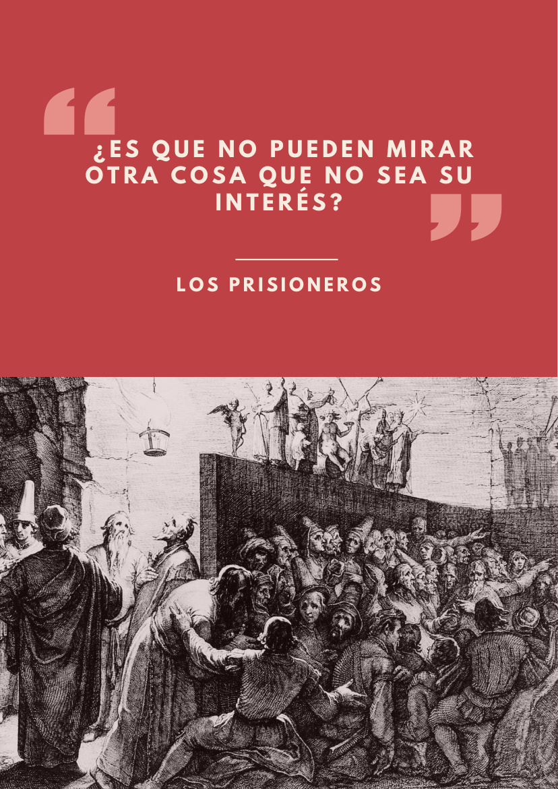

Para defender los derechos sociales, unidad política y articulación social
«La respuesta debe ser unidad política, articulación social y defensa de los espacios de base: comités, movimientos y organización popular.»
Página de síntesis · Sección IV
Extinción del Estado: la política ejercida a distancia del Estado, no la conquista de su aparato.
Aquí circula la discusión sobre la organización que no espera permiso: los espacios de base que se sostienen solos, el pueblo que pasa la cuenta, los territorios que exigen autonomía real, la crítica a toda dirección eternizada.
«Solo hay libertad real si nos desprendemos de (…) el Estado como fin último de la política.»
— Boletín N°3 · Tiempos de libertad, contratapa · leer en el boletín
«No se demandaba que el Estado nos diera dignidad: se organizó la dignidad como igualdad real.»
— Boletín N°3 · El 18 de octubre como sitio de intervención política · leer en el boletín
«Entendemos por «izquierda» al conjunto de militantes indiferentes ante las novedades de los movimientos de masas.»
— Boletín N°2 · ¿Qué entendemos por «izquierda»? · leer en el boletín
La Idea del comunismo no son cuatro principios sueltos: son los cuatro anudados, o ninguno. Leemos este punto por separado solo para ordenar la discusión; la pregunta que queda siempre abierta es ¿qué pasa con los otros principios en este punto? Por ejemplo, lo que hoy ocurre en Burkina Faso con Ibrahim Traoré: avanza en elementos que podrían considerarse socialistas y, al mismo tiempo, castiga con cárcel la homosexualidad. Leído con los cuatro principios anudados, eso no es una contradicción retórica: es un diagnóstico.

«La respuesta debe ser unidad política, articulación social y defensa de los espacios de base: comités, movimientos y organización popular.»
Boletín La Primera, edición 1 de junio de 2026, con PDF descargable desde la página de la coordinadora.
«La propuesta de Ley representa un contrasentido ya que no se aleja de visiones que tutelan la libre determinación, la autonomía, el territorio, la consulta y el consentimiento indígena.»

«Solo hay libertad real si nos desprendemos del fanatismo patriótico, la privatización de los bienes comunes, la división del trabajo manual e intelectual y el Estado como fin último de la política.»
«Entendemos por «izquierda» al conjunto de militantes indiferentes ante las novedades de los movimientos de masas…»